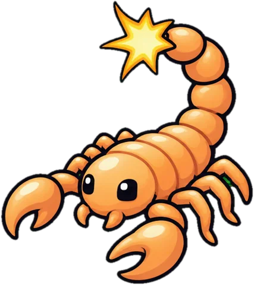

 FireBug
FireBugTap a stage to read its story.
Scorpling is a small sandy-tan scorpion with eight nimble legs and a curved tail tipped with a single glowing ember-spark. It scurries between sun-warmed rocks in the amber desert, clicking its pincers together when curious. Despite its fierce posture it is shy; it buries itself up to its eyes in warm sand when frightened, with only the glowing tail-tip visible - which, unhelpfully, makes it easier to find. The guardians prize these little creatures because they always signal the direction of water with a tail-point.
Field note: Scorpling taps out a rhythm with its front two legs before speaking, like a tiny drum-roll introduction.
Amber Desert. Scorpling and its family are found in the Amber Desert. See everyone who lives there.
Share a Bond Food that matches its types to become friends. Scorpling loves:
A Bond Food is not a trick. It joins your spirit with the Kimuro's spirit, and only when it chooses you.
Print the Kimuro adventure packs: mazes, cards, a board game and Bond Mark medals.
See the printable packs